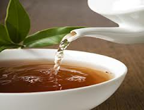

Что такое чай. Почти все о чае



По материалам книги Вильяма Васильевича Похлёбкина
" Чай . "
А также из других источников Интернет
Уважаемый Читатель - после ознакомления с Книгой
рекомендую Вам заказать ее бумажное издание.
" Чай . "
А также из других источников Интернет
Уважаемый Читатель - после ознакомления с Книгой
рекомендую Вам заказать ее бумажное издание.
Чай издавна прославляли как исцеляющий напиток. Он стимулирует жизнедеятельность организма, ликвидирует усталость, усиливает работоспособность. В этой книге вы найдете ответы на все ваши вопросы о чае – древнейшем и самом распространенном напитке на земле.
- Что такое чай.
- Предисловие.
- Глава 1. Происхождение и значение слова «Чай».
- Глава 2. Чай как растение.
- 1. Родина чая и чайный род.
- 2. Как растёт чайный куст.
- Глава 3. Географическое распространение чайного растения.
- 1. История развития чаеводства в России и в СССР до его распада.
- Глава 4. Сухой, или готовый чай.
- 1. Переворот в технологии, существовавшей веками.
- 2. Типы, разновидности и сорта чаёв.
- 3. Байховые чаи.
- 4. Прессованные чаи.
- 5. Экстрагированные – быстрорастворимые – чаи.
- 6. Квашеный чай.
- Глава 5. Состав и свойства чая.
- 1. Химический состав чая.
- 2. Витамины чая.
- Глава 6. Чай и здоровье человека.
- Глава 7. Чай как напиток.
- 1. «Чайные» и «кофейные» зоны.
- 2. Пьют чай все, умеют пить немногие.
- Глава 8. Заваривание.
- 1. Секрет заваривания.
- 2. О кондиции чая и его сохранности.
- 3. Вода для чая.
- 4. Посуда для чая.
- 5. Время и место чаепития.
- 6. Порядок заваривания.
- 7. Режим заваривания.
- 8. Нормы заварки.
- Глава 9. Основные показатели качества чая.
- Глава 10. Тестирование чая.
- Глава 11. Фальсификации чая.
- Глава 12. Национальные способы приготовления чайного напитка.
- 1. Китайские способы.
- 2. Тибетский способ.
- 3. Монгольский способ и его варианты.
- 4. Туркменский способ.
- 5. Узбекский способ.
- 6. Японский способ.
- 7. Английский способ.
- 8. Индийский способ.
- 9. Иранский способ.
- 10. Способ заваривания грузинского чая.
- 11. Способ заваривания турецкого чая.
- 12. Урянхайско-забайкальский способ.
- 13. Латиноамериканский, или кубинский способ.
- Глава 13. С чем и как надо пить чай.
- 1. Чай и сахар.
- 2. Чай и мука, чай и крупа.
- 3. Чай и молоко.
- 4. Чай и фрукты.
- 5. Чай и лимон.
- 6. Чай и пряности.
- Глава 14. Напитки, созданные на основе чая.
- 1. Кастэрд. «Яичный чай».
- 2. Грог.
- 3. Чайный кисель.
- Глава 15. Использование чая не в качестве напитка.
- Глава 16. Кто снабжает мир чаем и где преимущественно пьют чай.
- Приложение.
- Примечания.